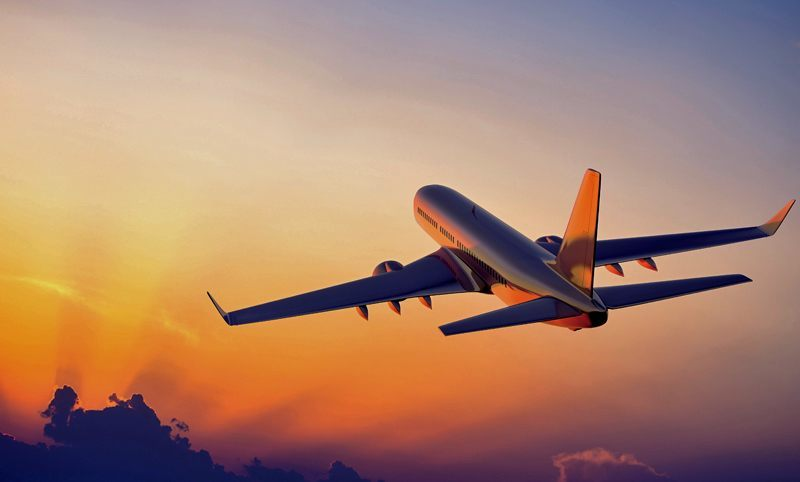

EVOLVEMENT
The first autopilot was developed in 1912 by Sperry Cooperation. The autopilot in the first aircraft connected a gyroscopic heading indicator and attitude indicator to hydraulically operated elevators and rudder, which was a great help in reducing the pilot's workload.
On June 18th, 1914, there were 57 specially equipped planes competing with his. Entries featured such improvements in aircraft technology as magnetos, self-starters, carburettors and other innovations. Sperry's entry was the sole participant equipped with a gyroscopic stabilizer apparatus, designed to improve stability and control. This autopilot system was also capable of performing take-off and landing. Sperry's device was mounted on a single-engine Curtiss C-2 biplane with a hydroplane fuselage. After demonstrating, the French military showed an immediate interest in the autopilot system.
The gyrocompass developed by Emler Sperry, father of Lawrence Sperry in 1908, was immune from deviation and variation problems, which had been difficult to overcome until then. Lawrence then took his father's idea and modified it to meet the needs of maintaining the three flight axis, which are, pitch, roll and yaw in 1911. His autopilot used four gyroscopes to stabilize the aeroplane and led to many flying firsts, including the first night flight in the history of aviation, then.
Lawrence Sperry won the first prize in the international aeroplane safety competition, announced by the Aero CLub of France and the French War Department, and received 50,000 francs ($10,000) and became famous overnight.  The Sperry Gyroscope Company, of Brooklyn - with Elmer Sr. and Lawrence Sperry, soon developed an unpiloted aircraft that could fly to a target guided by the Sperry gyroscope device. Among his inventions was an instrumentation that guided the aircraft when the visibility was zero. His bank-and-turn indicator and artificial horizon have remained the basic instruments for every aircraft from the Boeing 747 to the Piper Cub. He also came up with a variety of other instrumentation, including an airspeed indicator, a drift indicator and a significant improvement over the (British) Creighton-Osborne liquid-filled magnetic compass. Moreover, the performance of the autopilot was further developed, including control algorithms and hydraulic servomechanisms, as well as, attachment of additional instrumentation, like the radio-navigation aids which made it possible to fly during bad weather and night.
The Sperry Gyroscope Company, of Brooklyn - with Elmer Sr. and Lawrence Sperry, soon developed an unpiloted aircraft that could fly to a target guided by the Sperry gyroscope device. Among his inventions was an instrumentation that guided the aircraft when the visibility was zero. His bank-and-turn indicator and artificial horizon have remained the basic instruments for every aircraft from the Boeing 747 to the Piper Cub. He also came up with a variety of other instrumentation, including an airspeed indicator, a drift indicator and a significant improvement over the (British) Creighton-Osborne liquid-filled magnetic compass. Moreover, the performance of the autopilot was further developed, including control algorithms and hydraulic servomechanisms, as well as, attachment of additional instrumentation, like the radio-navigation aids which made it possible to fly during bad weather and night.
In December, 1931, for the first time in history a mechanical autopilot was licensed to fly passengers and airmail. The Department of Commerce allowed it to serve as co-pilot of a large Condor 18 passenger plane of Eastern Air Transport on the New York - Washington route. The autopilot then started to develop gradually. Likewise, Boeing B-52 bomber was developed in 1950. Similarly, various helicopters like the Kaman HTK-1 twin-turbine helicopter were presented in the next 4 years. Furthermore, with the quick development in the field of autopilot, Boeing 747 was presented in 1969. And after 6 years, in 1975, Cessna 150 plane flyers with autopilot learn the thrills of the model flying quickly. This Cessna has an autopilot that can be switched on to control this model aeroplane through take-off and landing. In addition to this, autopilot makes the work easier for the pilots as they could now spend more time on other necessary aspects of the flight control process, in 1979. The autopilot can now take the job of maintaining smooth ride during bad weather.
Autopilots today, in modern aircrafts are generally three-axis and divide a flight into take-off, taxi, ascent, level, descent, approach and landing phases. Autopilot automates all of these phases apart from taxiing. Modern autopilots use computer software to control the aircraft. The software reads the aircraft's position primarily, and then controls Flight Control System in order to guide the aircraft. Many autopilots include thrust control capabilities that can control throttles to optimise the air-speed and move fuel to different tanks to balance the aircraft in an optimal attitude in the air today, apart from classic flight controls. Autopilot generally flies an aeroplane with lower fuel consumption in comparison to a human pilot.
In modern large aircraft, autopilot reads its position and the aircraft's attitude from an inertial guidance system. This gathers errors over time. The longer the flight, the more error accumulates within the system. However, radio aids such as DME and GPS can be used to correct the aircraft position.